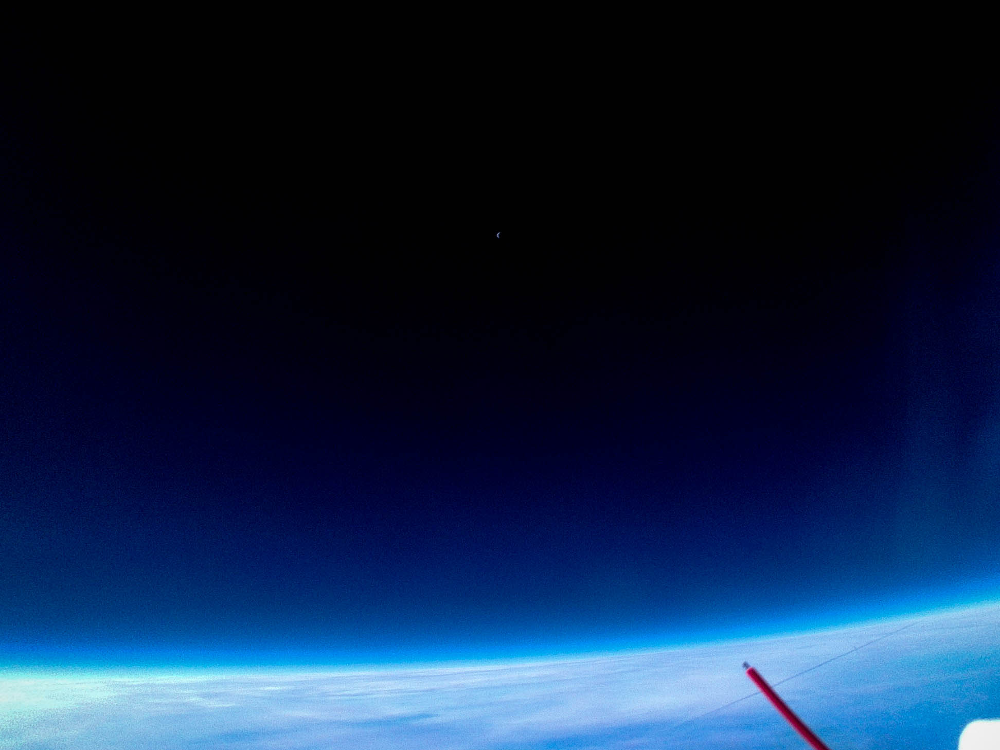
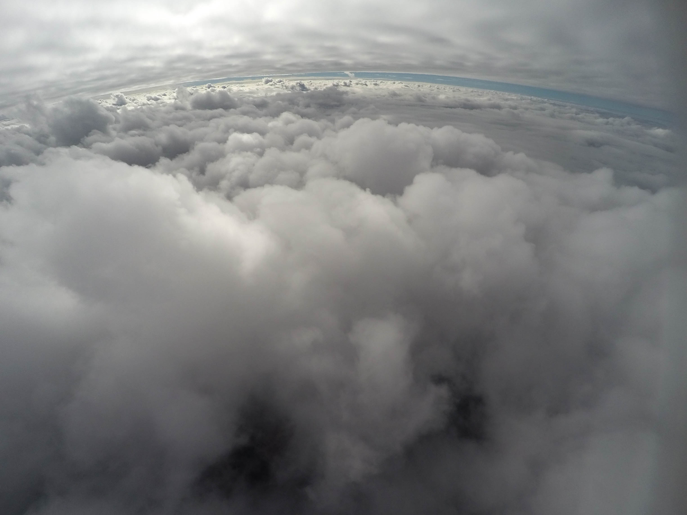

We are the Balloon Payload Program at the University of Maryland (UMDBPP), a group for undergraduate and graduate students. We collect scientific data and test engineering concepts by flying high altitude balloons with payloads attached, an average of three to four times per semester. The majority of payloads we fly student-built, but we have also flown instrumentation and concepts for HAPL and a variety of outreach projects with different schools and student groups.
Launch
Our program loves new members! Willing to learn? We're willing to teach! If you want to learn a skill like soldering, coding, building PCB boards, 3D printing, etc., look at the list below and see which members are available to teach. We're all very friendly so don't be afraid to reach out!
Landing
We always have work to do on our current payloads. If you are interested in a payload or a specific task for a payload, contact the payload lead on Slack listed next to the payload name (see Contact Us section below).